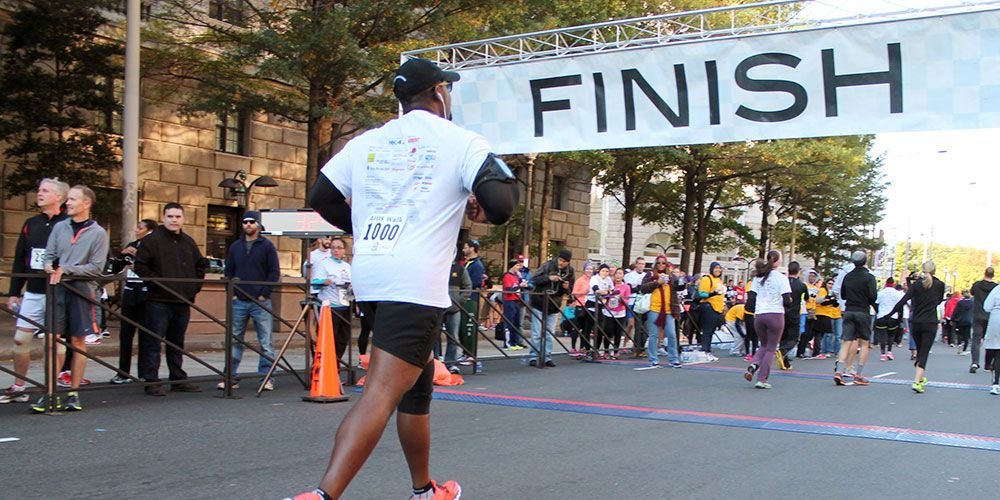

The joys of running
Running is very good for humans in many different ways. It is a great way to get exercise, and a great way to meet new people. There are many positives, and some negatives, it is easy, enjoyable and makes humans more social, you can do it at anytime, and it relieves stress rather than give stress. Although there are some negatives with running, there are also many positives.
If it doesn't challenge you, it won't change you.
Fred DeVito
From zero to hero
When I started running, I was very unfit and found it hard to run a mile. But with good diet and training, it did wonders for both my physical and mental health, and I even managed to train for and complete a marathon in the end!
Key Points
- Running is hard, but gets easier
- Running is good for your health
- Running can help you destress